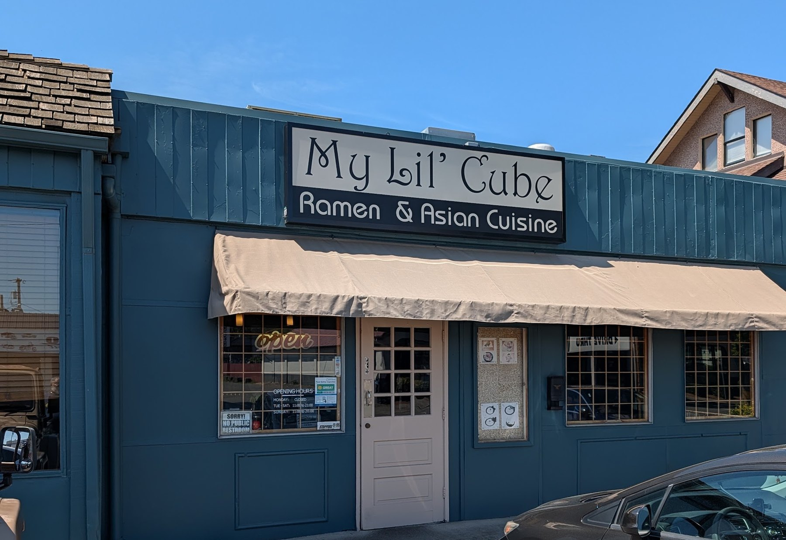
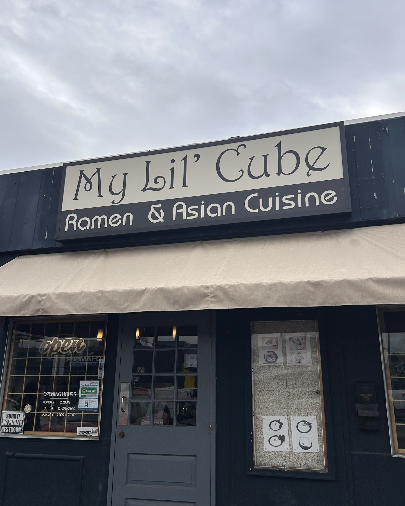
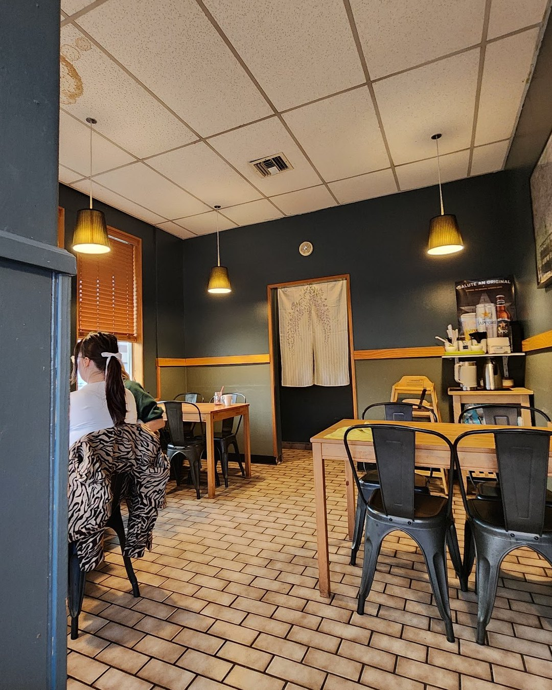
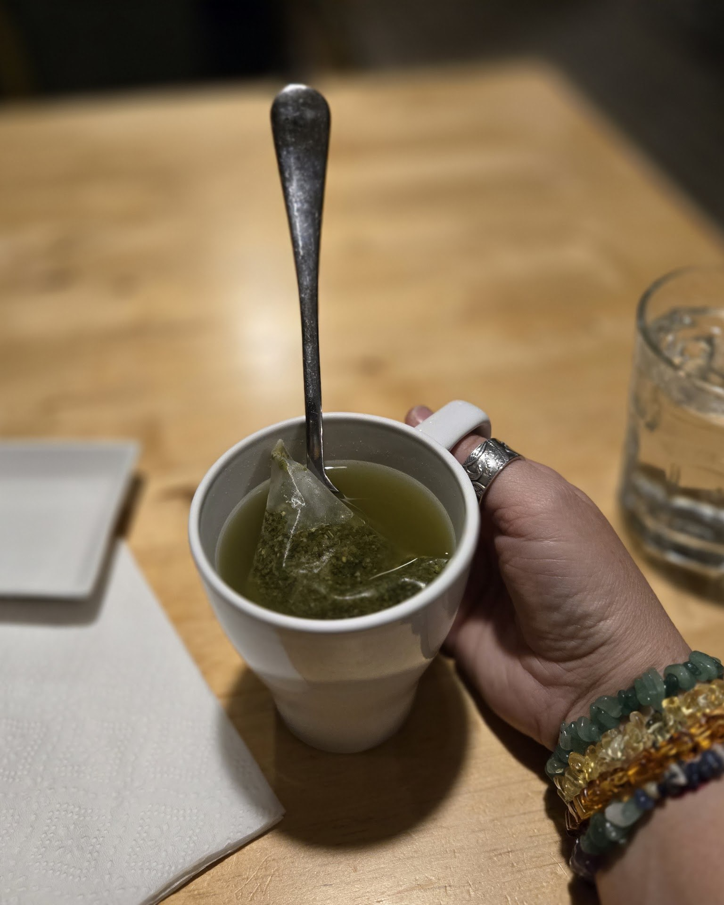
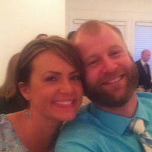
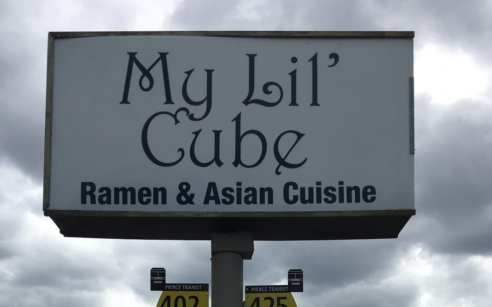

The black garlic tonkotsu is the one people come back for.
- Black Garlic Tonkotsu Ramen
- Tonkotsu Chashu Ramen
- Tonkotsu Seaweed Corn Ramen
When to find us
checking hours…
402 N Meridian, Puyallup, WA 98371
Open in Maps ↗
Exactly as posted on the card in their front window.

The building
One low blue-green storefront a block up from downtown Puyallup, a cream awning, and the sign over the door. Everything happens in the one room behind it.
★★★★★
“My Lil Cube is tucked away in a little shop in downtown Puyallup. Blink and you might miss it.”
Out of that little kitchen
Four things come up over and over in the reviews: the broth, the soup dumplings, the katsu curry and — more than any of them — the chili oil. Tap a card to see what's on the list.
The black garlic tonkotsu is the one people come back for.

The soup dumplings get named as often as the ramen does.

Cutlet, curry, rice. The plate that fills you up for the afternoon.

The small plates that land on the table first.

The room
It's a little room. That's the whole idea — it's called My Lil' Cube.
Slate walls, honey-wood tables, black chairs, wood blinds, and a couple of pendant lamps over the counter. RAMEN and RICE are spelled out in metal letters on the back wall, with a Hokusai wave and a Sapporo poster beside them. From the tables in front you're looking straight out at N Meridian.
It sits a short walk from the fairgrounds, with a Pierce Transit stop at the pole sign out front — the 402 and the 425 both pull up there.




The one thing everybody mentions
It isn't on any list. You ask, and it comes to the table in a little white bowl — red, loaded with sesame, and hotter than it looks. It's the thing people write about.
★★★★★
“Lately they seem to have upped their chashu game… and don't sleep on the chili oil (though it is extremely hot)!”

Tonkotsu ramen, as it comes
Tap the chili oil.
★★★★★
Word of mouth
Four and a half stars would be a good restaurant. For a room this size, that's a lot of people going out of their way. A few of them, word for word:
Read the reviews on Google ↗★★★★★
“I had the Black Garlic Tonkotsu Ramen, their signature dish. It was excellent and substantial… The service is quick yet attentive & the atmosphere is pleasant and a cut above the average.”
★★★★★
“This is our favorite spot, amazing perfect ramen, their xiao long bao is excellent, I’m obsessed with the scallion pancakes and the milk tea. We’ve been regulars since they opened years ago.”

Brooke CarpenterGoogle · 7 months ago★★★★★
“Pulled right up to the door and walked right in and was sat immediately with a party of two on a busy Friday. Super friendly efficient service! Best Ramen I've ever had!”
Come find it

It stands at the curb on Meridian, right above the bus flags for the 402 and the 425.
The green DOWNTOWN PARKING sign at the light points you to the city lots a block off.
They don't take reservations. Order at the table, or have the whole thing boxed to go.
Ramen & Asian Cuisine
At the peak of lunch or dinner there's usually a wait at the door. Everybody who writes about this place says take it.